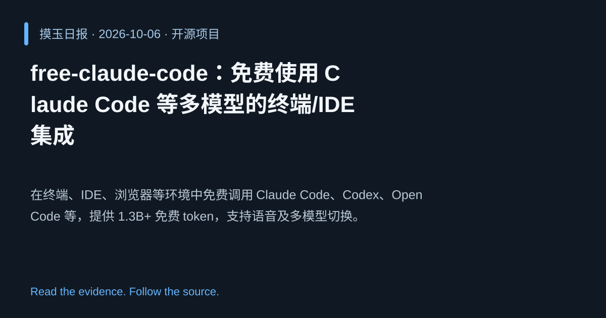

2026-10-06 · Asia/Shanghai · 开源项目 · #7
free-claude-code：免费使用 Claude Code 等多模型的终端/IDE 集成
Alishahryar1/free-claude-code
在终端、IDE、浏览器等环境中免费调用 Claude Code、Codex、OpenCode 等，提供 1.3B+ 免费 token，支持语音及多模型切换。
为什么值得关注
降低高性能代码生成模型的使用门槛，促进开发者在各种平台上即时获取 AI 编程助力。
- 1.3B+ 免费 token，支持多模型和多工具（Claude Code、Codex、OpenCode 等）。
- 可在终端、VSCode、手机、浏览器运行，支持语音交互。
- 兼容多种 harness，实现跨平台统一体验。

热度 47.5 / 100；排名与评分保留该期记录。